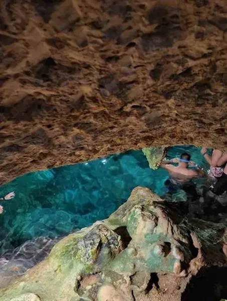
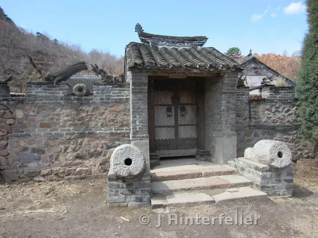
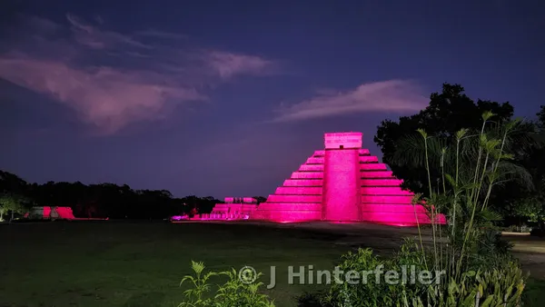
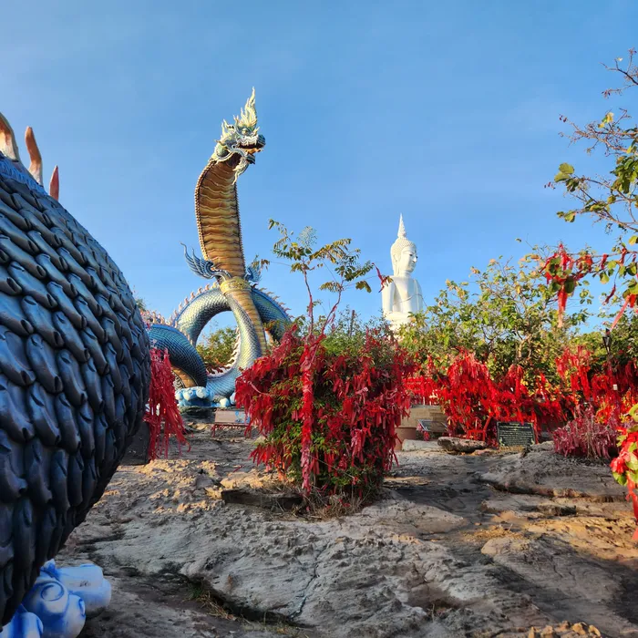

Cenote · field photograph · J. Hinterfeller

Gate · J. Hinterfeller

Chichen Itza At Night
Yaxuna Maya Ruins Yucatan Mexico

The Naga King Guarding The Pearl Buddha overlooking the Mekong River Mukdahan Thailand
As the archive grows, each photograph can connect to the story behind it.
Photography